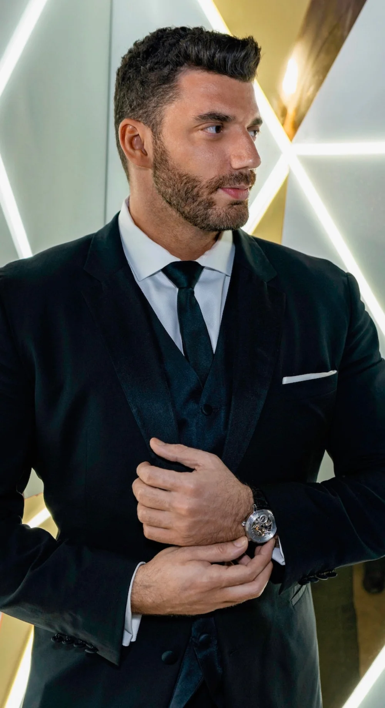
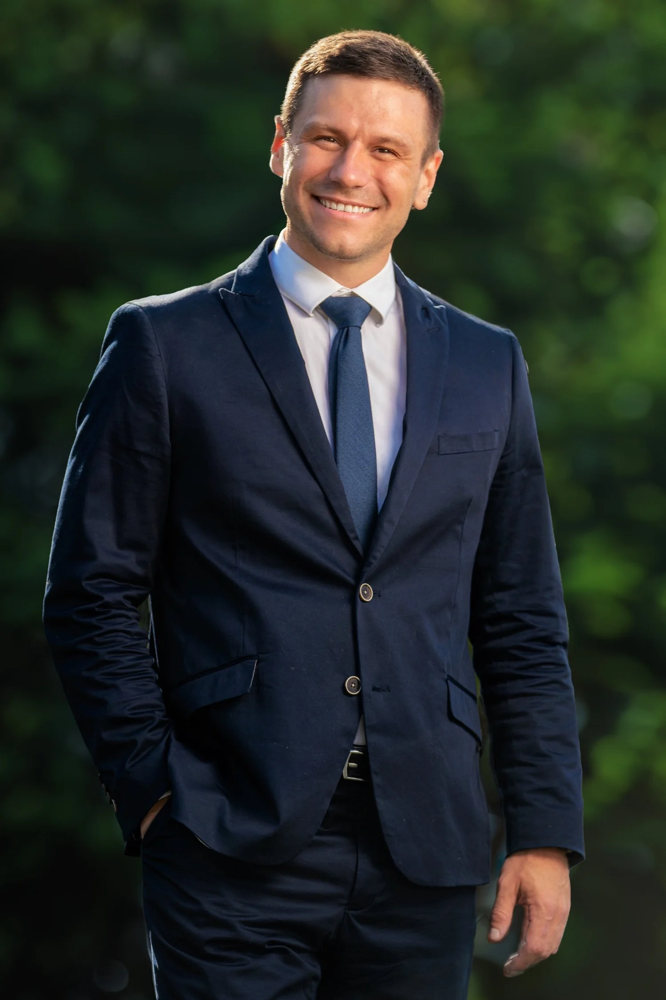

About Us
A creative duo making brands impossible to ignore.
Dante Valentino and Jay Green are creative directors, brand strategists, and filmmakers based in Austin, TX. Together as Vneck Bros, they combine cinematic storytelling with strategic brand thinking to produce work that doesn't just look good — it moves people and drives results.

Dante leads visual strategy and direction. With a background in cinematography and brand campaigns, he brings an uncompromising eye for image-making to every project — from concept through final cut.

Jay drives the strategic side of every engagement — turning brand goals into creative frameworks that guide production. His approach bridges the gap between compelling story and measurable impact.